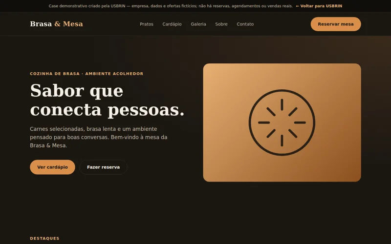
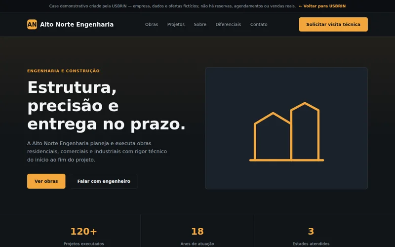
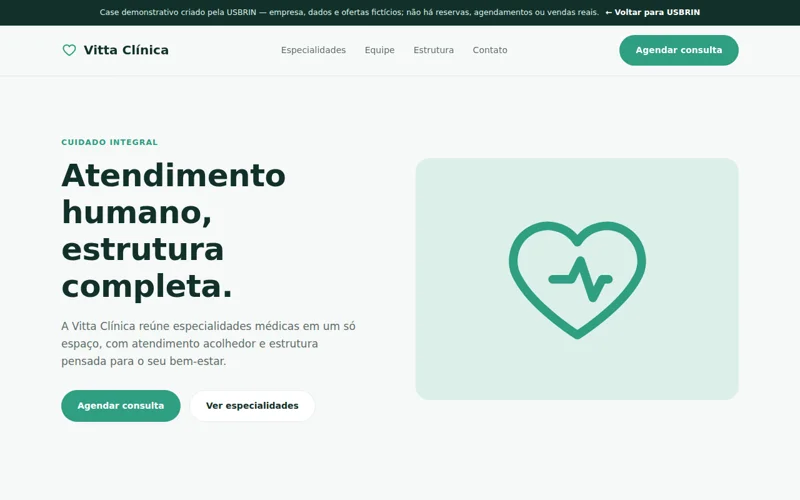
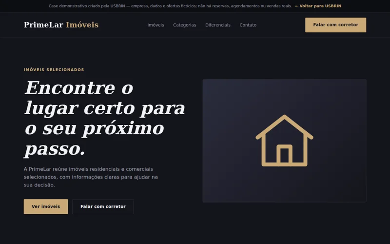
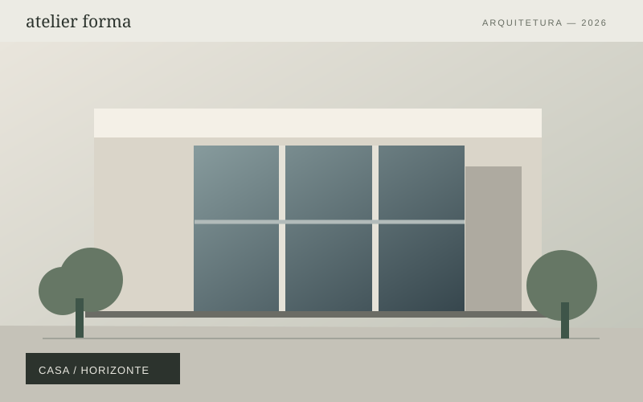
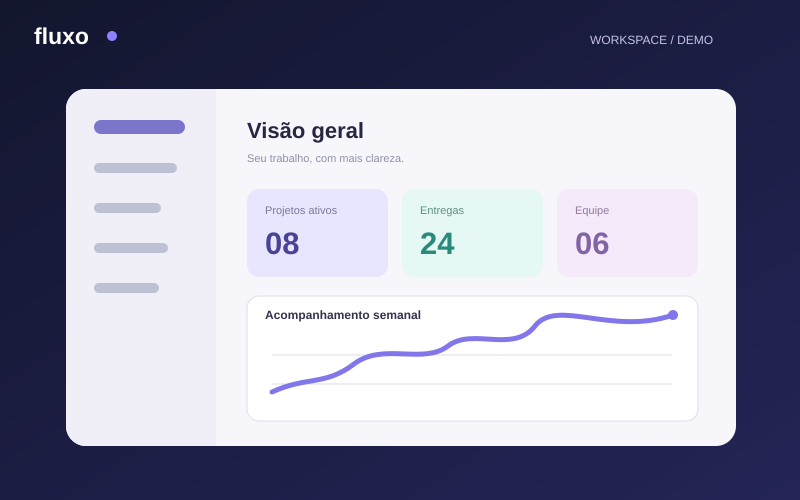

Projeto autoral · ConceitoBrasa & Mesa
Uma apresentação acolhedora, com cardápio, informações e uma navegação pensada para despertar o apetite.
Uma coleção autoral de experiências digitais criada para mostrar o que uma boa presença online pode ser. Explore estilos, estruturas e soluções para imaginar o próximo site da sua empresa.
Navegue pelos projetos disponíveis e conheça cada experiência.
6 projetos disponíveis

Projeto autoral · ConceitoUma apresentação acolhedora, com cardápio, informações e uma navegação pensada para despertar o apetite.

Projeto autoral · ConceitoProjetos, especialidades e credibilidade reunidos numa experiência objetiva para o setor de construção.

Projeto autoral · ConceitoEspecialidades e atendimento apresentados com leveza, organização e uma linguagem visual acolhedora.

Projeto autoral · ConceitoUma estrutura para explorar propriedades, comparar informações e facilitar o primeiro contato.

Projeto autoral · ConceitoPortfólio arquitetônico de estética autoral, composições amplas e apresentação detalhada de ambientes.

Projeto autoral · ConceitoUma plataforma demonstrativa com painel interativo e narrativa clara sobre produtividade.
Tente outra palavra ou escolha uma categoria diferente.
Esta coleção apresenta projetos autorais e marcas conceituais criados pela USBRIN para demonstrar possibilidades de design, organização e funcionalidades. Não representam contratos realizados com essas marcas.
Estamos desenvolvendo uma coleção de 50 projetos distribuídos por dez mercados. Cada nova entrega será publicada após avaliação de identidade, navegação, desempenho e usabilidade.
Cada empresa tem uma necessidade. Use os projetos como referência e construa uma proposta adaptada aos seus objetivos.